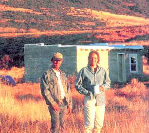
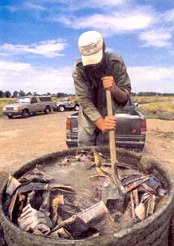
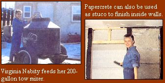
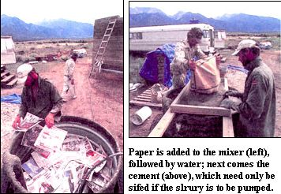
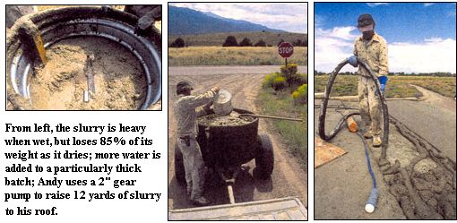
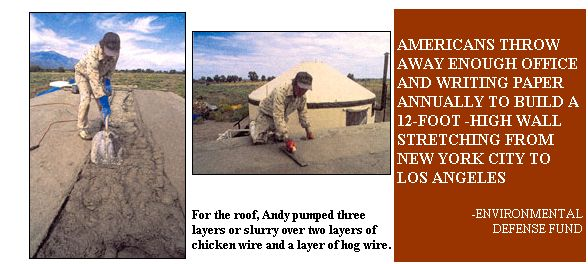
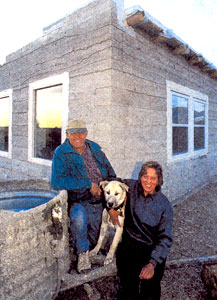

Sure, we'd heard the rumors about paper houses, but our initial reaction was largely incredulous: What homebuilder with a lick of sense would invest his time, energy and money in literally a house of cards? Well, then we ran across Gordon and Laura Solberg, publishers of the Earth Quarterly newsletter and self-appointed chroniclers of the paper building movement. In touting paper's pluses, both ecologic and economic, the Solbergs covinced us to take another look at this innovative, dirt-cheap construction method. We came away enthusiastic converts eager to share the news. Read on for a "papercrete" primer that could have you building your house - or addition or outbuilding - for as little as $1 a square foot!-MOTHER
In recent years a small band of innovative homebuilders has been building houses out of papercrete, essentially an industrial-strength made of recycled paper or cardboard, sand and Portland cement. The concept is simple: You build a mixer (akin to a huge kitchen blender), mix the dry ingredients with water to form a slurry, cast the slurry into blocks or panels and let, it dry. When it hardens, papercrete is lightweight, a good insulator (up to R-2 per inch), holds its shape even when wet and is quite strong, with a compressive strength of 300 pounds per square inch (psi). Moreover, papercrete is remarkably inexpensive, since all of the ingredients except for the cement are available for free or nearly free. Given that our landfills are clogged with more than 50 million tons of paper and cardboard annually, and that a bought-and-paid-for home remains beyond the financial means of millions of American families, building with recycled paper simply makes sense.
Papercrete has been independently rediscovered a number of times since the 1980s - by James Moon of Tucson, Arizona, Eric Patterson of Silver City, New Mexico (who was the subject of a PBS documentary several years ago), and Mike McCain of Crestone, Colorado. We say "rediscovered" because papercrete is not a new concept: It was patented back in 1928, but the patent expired unused since there was no profit to be made in so easy and inexpensive an idea.
There are several dozen papercrete structures completed or under construction at this time. Here, we'll focus on two of them: Andy Hopkins' 512-square-foot house in Crestone and Virginia Nabity's 800-square-foot addition to her straw bale house in Cortez, Colorado. Both were built in 1999 and reflect the state of the art of papercrete.
We'll also touch on a close relative of papercrete, made by adding adobe dirt to the paper pulp. This "fidobe" (short for fibrous adobe) has the advantage of not requiring cement, which makes it cheaper than papercrete (suitable dirt is often available for free on-site), as well as more Earth-friendly, since the manufacture of Portland cement is a leading cause of greenhouse gases.
Fidobe has several advantages over regular adobe: it is relatively lightweight, has good insulation value, will hold a screw and can be painted. Also, fidobe blocks won't deteriorate if left out in the rain, since the paper fibers bind the blocks together.
Working against fidobe, however, is the fact that it is extremely slow-drying. At least with papercrete, you can hurry the drying time by increasing the cement: the more you add, the faster the slurry hardens. This can provide a real edge in wet climates or if you're in a hurry.
This matter of drying times brings us to the question that we hear most: Is it possible to build with papercrete or fidobe in humid climates? Our answer is: It depends. There is no doubt that papercrete and fidobe are admirably suited for dry climates; the wetter the climate, the more precautions you'll have to take:
Build a roof with a substantial overhang. (For more on roofs, see page 51.)
Consider leaving your walls unsealed. If you do opt to seal them (Eric Patterson recommends Homestar brand silicone sealer), be sure to thoroughly coat them inside and out. Any moisture entering a sealed wall will never escape.
With these factors in mind, it should be possible to build with papercrete in most climates. Fidobe is probably best left to drier areas.
When considering building any kind of innovative house, the first question that comes to mind is: What about building codes? We've little doubt that papercrete and fidobe will be included in the universal building code ...eventually. Until then, you're left with three main options:
1) In many rural counties, particularly in the West, there are either no building codes or the existing codes are loosely enforced. Both Andy and Virginia live in counties without building codes. A good strategy for any would-be innovative builder is to choose a likely looking coun ty, drive around until you locate a suitably "alternative" looking house and ask the owners what they did about codes.
2) Here in New Mexico (and this probably holds true for many other states) you can apply for an "experimental" permit. This requires drawing up a set of plans and having an engineer sign off on them.
3) Talk to your local building inspector. While many inspectors are strictly by-the-book, there are some that are open to new possibilities and will work with you. Mix up a sample of papercrete or fidobe so he can hold it in his hand and rap it with his knuckles. Fidobe in particular might qualify under your state's existing adobe code, particularly if you called it "fiber-enhanced adobe," emphasizing the word adobe. We know of one papercrete house being built with a perrnit in Arizona. The building inspector insisted that it be built post-and-beam, with the papercrete used only as infilling. This requires more lumber, but it is a very convenient way to build.
Ideally, in the future papercrete or fidobe blocks will be manufactured by local entrepreneurs and sold by the truckload. In the meantime, you've got to make your own blocks and that means building a mixer.
Your basic papercrete mixer is nothing more than a huge kitchen blender, consisting of a tank, a blade and a power source. The smallest mixers use a 55-gallon barrel, a lawn-mower blade and a two-horsepower electric motor, but this setup is a bit small for serious production.
Currently the most popular mixer design - and the type used by both Andy and Virginia - is the "tow mixer," invented by Mike McCain. It consists of a 200-gallon steel stock or plastic water tank riding atop a recycled automotive rear end. In a car, the drive shaft turns the wheels and vice versa: turn the wheels, and the drive shaft will turn. This is the key to Mike's tow mixer design. He cut off most of the drive shaft, but leaves several inches of it sticking out of the differential; he then runs the shortened drive shaft through the bottom of the tank and affixes a riding lawn-mower blade onto it. When you tow the mixer behind your vehicle, the blade spins rapidly and with great force. Under ideal conditions, you can mix a batch of slurry by driving a block and back, though more typically it takes about a half mile in each direction.
For many, building the mixer is the most intimidating part of papercrete. Fortunately, McCain has started a mixer-building sideline (see "Sources").
Since the most common mixer design has a capacity of 200 gallons, most papercrete builders think in terms of 200-gallon batches. Usually, people add one 94-pound bag of Portland cement to a mixerload. Half a bag will work fine, but the slurry will dry more slowly and won't be as hard when it does. Some people add two bags per mixerload, particularly if the papercrete is to be used close to the ground, for roof panels or for floors.
While there's no one right recipe, the basic formula for a 200-gallon batch is: 160 gallons of water, 60 pounds of paper, 94 pounds of cement and 65 pounds of sand (about 15 shovelfuls). The sand adds thermal mass, reduces flammability, makes the slurry pack down better for a denser, stronger block and helps prevent cracking when papercrete is used for stucco. Although the paper makes up only 27% of the dry ingredients by weight, it constitutes well over half the volume of a finished block.
When making roof panels, leave out the sand for an even lighter weight material with maximum insulation value.
Incidentally, as we said earlier, slurry is 85% water by weight. A lot of this water drains out immediately after the papercrete is poured. The rest evaporates as the slurry dries, leaving behind the millions of tiny air pockets that account for papercrete's lightness and superior insulation properties.
As for fidobe, the ideal formula depends on your dirt. It pays to make up small batches in a kitchen blender before you go into serious production. Vary the dirt to paper ratio and see what proportion seems best. But keep in mind there is a trade-off: the more dirt you add, the heavier and stronger your block will be, but the less insulation it will provide. Our personal choice is a 4:1 ratio (dirt to paper, by weight). This gives a strong block that is reasonably lightweight, with a substantial R-value. For a 200-gallon batch, we mix together 160 gallons of water, 60 pounds of paper and 240 pounds of dirt.
The clay content of the dirt should be anywhere from 30% to 100%. With regular adobe, too high a clay content causes cracking. Not so with fidobe, since the paper fibers hold the block together.
Unless you add enough nonflammable material to the mix, both papercrete and fidobe will burn, slowly and without flame, like a charcoal briquette. We've found that papercrete made with a 4:1 ratio (cement to paper, by weight) will not burn, and that fidobe made with 3 parts dirt to 1 part paper will not burn. So we don't consider flammability to be much of an issue. Besides, a nonflammable stucco inside and out will cut off the oxygen supply to the wall, preventing burning.
Still, before building it would be a good idea to mix up some test samples, dry them and see if they burn. The most common test is to apply the flame of a propane torch to one spot on a block for a minute. If the formula contains enough nonflammable material, the block will glow red-hot where the flame hits, but it won't sustain combustion once the flame is removed.
Both blocks and slip forms have their advantages. With blocks, there is no lifting of slurry, which again, at 85% water, is very heavy. Instead, the slurry is dumped into block forms at ground level, where the blocks are left to dry (thus losing most of their weight). With slip forms, the slurry has to be handled only once, since it's poured directly onto the wall. But there is a lot of heavy lifting involved, and the wall won't start to dry out until the last load of slurry is dumped at the very top. Virginia started with blocks, but ran out and ended up using slip forms, while Andy used slip forms all the way. Both made their walls 12" thick.
If you plan on using slip forms, consider extending the window frames down to the ground, putting in some corner posts, and building a post-and-beam structure. That way, you can nail your forms onto the corner posts and window/door frames, which is a quick and convenient way to build. Also, the extra lumber will add strength to your building.
By the way, there is a third alternative: both papercrete and fidobe can be cobbed. To do this, you first dump the wet slurry onto a piece of shade cloth to drain. After several minutes, you can pick up the slurry, which will have become quite thick, with your hands (always wear rubber gloves when handling papercrete) and sculpt it to your heart's content. Cobbed fidobe we think offers the best of both worlds, giving you the free-form creativity of cob, but with the higher insulation value of fidobe. (For more on cob construction, see "From the Ground Up," November 1998, MEN #170.)
While many a builder has tried, no one has yet come up with a surefire method to pump slurry. We've heard lots of anecdotes, some of them conflicting. For example, one person we know used a diaphragm pump with great success, but another had a lot of trouble with a diaphragm pump that kept clogging. Others have had pumps work for awhile, then break down. Most pumps, even those designed to pump gravel, work best when pumping a substance with a high water content. But this goes against the principles of papercrete, which demands that the slurry be as dry as possible when applied to reduce subsequent shrinkage.
A number of people are looking into the pump situation - a grout pump is a likely candidate - and we plan to post regular updates on our Web site, www.papercretenews.com , as we find out more. Once pumping slurry becomes commonplace, it will revolutionize papercrete construction by eliminating a lot of the physical labor.
Although some papercrete houses have been built directly on rubble trench foundations, most recent builders, including Virginia and Andy, are using modest concrete foundations or stem walls. The weight of the heaviest papercrete building, even with a hefty snow load on the roof, is on the order of 5 psi. Since papercrete has a compressive strength in the 300 psi range, and concrete has a compressive strength of 3,000 psi, neither walls nor foundation are likely to come close to having their limits tested.
Andy's foundation is 12" wide, 8" high, and sits about 4" above grade. Virginia has a 12" wide by 10" high concrete stem wall resting on a rubble-filled trench. Both used horizontal rebar laid lengthwise to eliminate any possibility of the concrete cracking.
As with straw bale, papercrete builders have also started inserting into the foundation short pieces of vertical rebar on which to impale the first course of blocks. Again, it's important to use a stem wall or to build a foundation that peaks a few inches above ground level. It's also a good idea to paint the top of the foundation with concrete sealant to prevent wicking of moisture into the wall.
Since papercrete is a good insulator with high compressive strength, it is commonly used as a subfloor. First you lay down a sheet of plastic and make one-foot slits every few feet so that the excess slurry water can drain out. (Since the slits are so small, wicking of soil moisture back into the floor will be minimal.) Next, you pour a 6" layer of papercrete onto the plastic and allow it to dry. Finally, you cover this with a 2" layer of concrete or adobe. Since the papercrete has a certain amount of give to it, the resulting floor is slightly springy, like a wooden floor, and isn't as hard on the feet as solid concrete.
Another strategy is to make the floor totally out of papercrete. Using two bags of cement per batch will create a hard floor, which, when stained an attractive color and sealed, should stand up to considerably hard use.
If building with blocks, you'll need to drill holes through the first course so they will slip over the vertical foundation rebar. Put down a 1" bed of papercrete or fidobe mortar onto the already sealed foundation, then slip the dried blocks into place. Subsequent courses are laid just like regular adobe, using papercrete or fidobe slurry as mortar. It's always a good idea to use string and a level, like adobe builders use, to keep your walls plumb.
Papercrete and fidobe can also be formed into "logs" measuring anywhere from 4' to 8' long. (It will take two people to move an 8' log, but the wall will go up very quickly.) The logs should be reinforced with cane, bamboo or small saplings, since the longest logs tend to break unless they're completely dry. Logs will give you a stronger wall than will blocks, as fewer mortar joints are required. Plus, a set of long logs extending out in each direction makes for a very strong corner. Logs can be easily cut with a chain saw to fit precisely between window frames. (Be sure the logs are totally dry before you cut, or you'll have to contend with shrinkage.)
Every three to four courses, 1/2" rebar is driven vertically through the wall, about 4' apart. Some experienced builders also recommend laying a piece of 1/2" rebar horizontally down the middle of every third course and wiring it to the vertical rebar to further strengthen the wall.
If you are using slip forms, any convenient depth is fine. These days most builders are using 8"-deep forms. (If the wall is 12" wide and the form is only 8" deep, there is no danger that a form full of slurry will tip over.) With forms, a thicker slurry is better. Andy drained his papererete on a piece of shade cloth for several minutes before pouring it into his forms, thereby reducing shrinkage and cutting down on water penetration into the already poured wall below the form. He was able to remove his forms 30 minutes after he had filled them with slurry.
Slip form walls are reinforced with rebar just like block walls.
If you plan to build with slip forms, be forewarned: Though self-supporting even when wet, newly poured walls will need to be securely braced until they dry to ensure that they remain perfectly vertical and to prevent accidents, should, say, somebody bump into one of them. After removing the forms, bullders often prop wet walls with vertical 2 x 4s, braced with a second set of 2 x 4s placed at a 45° angle.
Once dry, the walls become exceptionally strong. As Andy says, "You could crash a car into my house and nothing would happen - except to the car."
We have never heard of a concrete bond beam being used on a papercrete building. Most builders use a wooden bond beam - 2" thick lumber, the width of the wall, pinned to the wall with rebar. The rebar is bent over at the top so the bond beam won't lift off the wall in a high wind.
Virginia used a conventional truss roof nailed to her bond beam. Andy made a papercrete roof without a bond beam. Spacing vigas every 30 inches, he drilled holes through them and pinned them directly to the wall with rebar. Then he laid 2" x 4" woven hog wire over the vigas, stretching it as tightly as possible to reduce sagging. Next, he put on two layers of 1" chicken wire, staggering the layers so that the maximum space between wires was a half inch. Over this, he poured a 1" layer of papercrete and allowed it to dry. (He didn't apply the entire thickness of papercrete all at once, because he didn't want it running through his wires.) He used two bags of cement per batch for extra strength, and he didn't use any sand to minimize the weight.
Not wanting to lift all that heavy slurry up to his roof, he bought a 2" gear pump, with which he pumped up a total of 12 yards of slurry (24 mixerloads). It worked, though the pump was starting to show signs of wear by the time he was through. After the first 1" layer was dry, he pumped on an additional 4" layer, allowed it to dry, then pumped on a final 2" layer.
For waterproofing, he used Elastomeric roof coating. First he put down four 5-gallon buckets of Elasto Seal primer, then covered it with four buckets of Snow Roof. He figures he could have done the job with half as much primer and roof coating, but he opted to spend the extra money for extra protection.
Any plumbing and wiring in the floor slab is done in the standard way. Since papercrete and fidobe can be easily sawed, it is also simple to place plumbing and wiring in the walls after the house is completed. Just make two parallel cuts with a chain saw, pop open the groove with a screwdriver, install the plumbing or wiring and stucco over it with papercrete or fidobe. Holes can be cut for electrical outlet boxes with a saber saw; simply mark the location of the box, cut around the perimeter with the saw, then pop out the papercrete "plug" with a screwdriver.
Both papercrete and fidobe can be used as stucco. For papercrete stucco, it's good to use a lot of cement (at least two bags per 200-gallon batch) for extra hardness, adhesion and protection against fire. Some people have had great success applying papercrete stucco directly to the wall without chicken wire, but others have had trouble getting it to adhere properly. The rule seems to be: the greater the cement content, the better the adhesion. Fidobe stucco seems to adhere well to a fidobe wall. (For more on do-it-yourself stucco, see "Stucco Made Simple," January 2000, MEN #177.)
Andy estimates that the materials for his 16' x 32' house cost $4,050, which works out to $7.91 per square foot. This isn't at all bad by today's standards. Virginia estimates a cost of $20 per square foot for her addition, largely because of the conventional roof. Some people are building with fidobe in the $1 per square foot range (no, we didn't drop a decimal point!), but this requires scrounging all the doors, windows, lumber, etc., and using a rubble trench foundation. It's very possible to keep costs to $5 a square foot if you buy used doors, windows and lumber. It all depends on how much energy you want to put into hunting for used materials and how successful you are on your quest.
Both Andy and Virginia say yes, definitely, though both agree it was a lot more work than they had anticipated. Mixing their own slurry was of course the biggest time- and labor-drain: Andy mixed a total of 100 loads; Virginia mixed 150.
Should the day come when we can buy ready-made blocks at a reasonable price, or if somebody comes up with a reliable slurry pump, the labor required will drop astronomically.
The papercrete/fidobe movement is just beginning. We like to say it's where straw bale was ten years ago - most people have yet to hear of it, and only a few houses have so far been built. But there is a crying need to do something useful with all the trash this culture generates. Rather than calling used paper and cardboard "waste" and throwing it into landfills, we can instead turn it into a valuable building material. It's a golden opportunity for this country to start managing its solid waste "problem" with a little common sense. Imagine being able to build your next house out of used pizza boxes and junk mail!
For information about the Solbergs' book, video and workshops: www.papercretenews.com ; or send a SASE to Box 23-M, Radium Springs, NM 88054.
For information about or to order a tow mixer: Mike McCain, (505) 531-2201.
For a papercrete consultation: Andy Hopkins, (801) 412-9895; Virginia Nabity will also answer questions, (970) 565-1981.
Papercrete contractor Laurin Desseaux, (970) 564-9689, who helped Virginia build her house, is interested in taking on more projects; he is willing to travel.
|
 Andy and Nancy Hopkins, outside of their papercrete house in Crestone, Colorado |
 Andy's son, Nathan, mixes a batch of papercrete. |
 Andy and Nancy built their house for a mere $4,050. |
|
 |
 |
 |
|
 |
|
|